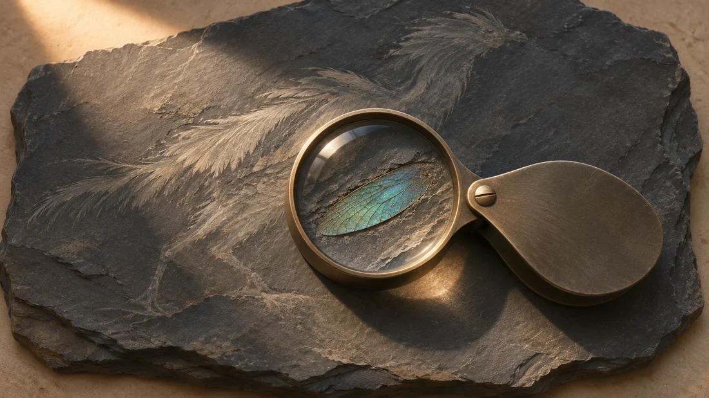

Halvtimmen · Fåglar och naturvård
Ugglans sista måltid ger en ledtråd om dagsljus

Fördjupning.
I magtrakten på ett cirka 47 miljoner år gammalt ugglefossil från Messel i Tyskland har forskare hittat rester av en kackerlacka. Det intressanta är inte bara vad ugglan åt. En bit av kackerlackans vinge skimrar blågrönt, och hos nutida kackerlackor är sådant skimmer förknippat med dagaktivitet. Tillsammans med ugglans bevarade fjädrar och vingben talar det för att den lilla fågeln kan ha jagat i dagsljus.
Fyndet, publicerat online i Current Biology den 2 november 2026, ger forskarna något ovanligt att gå på. De flesta ugglefossil består av enstaka ben. Från Messel finns här både avtryck av flygfjädrar och rester av en sista måltid. I de bevarade handpennorna, de yttre flygfjädrarna, såg forskarna inte den fransiga framkant som hos många nattaktiva ugglor bidrar till tystare flykt. Fossilets överarmsben var också kraftigare än hos nu levande ugglor, ytterligare ett tecken forskarna använder för att resonera om flykten.
En dagaktiv insekt kan förstås bli uppäten efter mörkrets inbrott. Forskarna har varken sett jakten eller klockslaget; det intressanta är att måltiden och vingarnas form pekar åt samma håll. Fyndet hjälper till att ringa in hur nattaktivitet utvecklades, men säger inte när den började eller hur andra tidiga ugglor levde.
Källor och källvärdering
Mayr m.fl., Current Biology, online 2 november, tidskriftsnummer 16 november 2026. Studieförfattarnas primärkälla för maginnehåll, jämförelser med nu levande arter, primärfjädrarnas framkant och överarmsbenets form. Direkta observationer på fossil stöder beskrivningen; beteendet är en tolkning byggd på jämförelser, inte en direkt observation. Underlaget avser detta exemplar.
Senckenberg, forskningsmeddelande 3 november 2026. Forskarinstitutionen beskriver fyndplats, datering, bevarandet och vingfragmentets skimmer. Nära själva undersökningen, men samma forskning, inte oberoende bekräftelse.